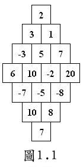
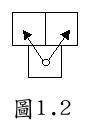

| Problem C: Towards Zero |
Have you ever heard of this game? The player jumps in a special game board under certain rules, so that the numbers he jumps on, after being linked up by plus or minus signs, get closest to zero.
The game board looks like the one shown in Figure 1.1. Its size is determined by the number of squares in the middle row N. (Figure 1.1 is an example where N = 4.) The player starts at the bottom-most square, then jumps in any of the directions shown in Figure 1.2. The game ends when the player reaches the topmost square. During the game, the player cannot jump out of the game board. Finally we write down the 2N-1 numbers in order, then insert plus or minus signs between each pair of adjoining numbers such that the result is closest to zero.
Let us look at the game board in Figure 1.1 as a example. We should get: 7+8+(-5)+(-2)-5-1-2=0, 7+10+(-7)-6+(-3)-3+2=0, 7+10+(-5)-10-5+1+2=0, or 7+10+(-5)+(-2)-5-3-2=0.
 
The first line of input contains N (1 ≤ N ≤ 30). The following 2N-1 lines give the numbers in the squares in the game board. The j-th number in the (i+1)-th line corresponds to the j-th number in the i-th row of the game board. (The numbers are all ≥ -50 and ≤ 50.)
Input contains multiple test cases, and it ends with a case where N = 0.
For each case, your output should print the absolute value of the result you get for each game board.
4 2 3 1 -3 5 7 6 10 -2 20 -7 -5 -8 10 8 7 0
0